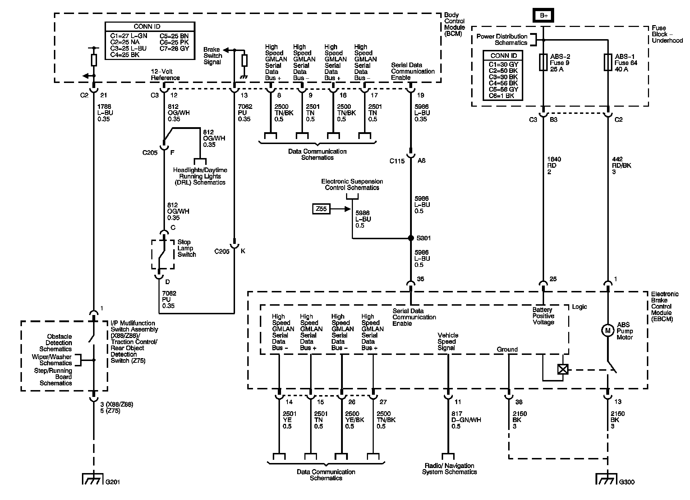
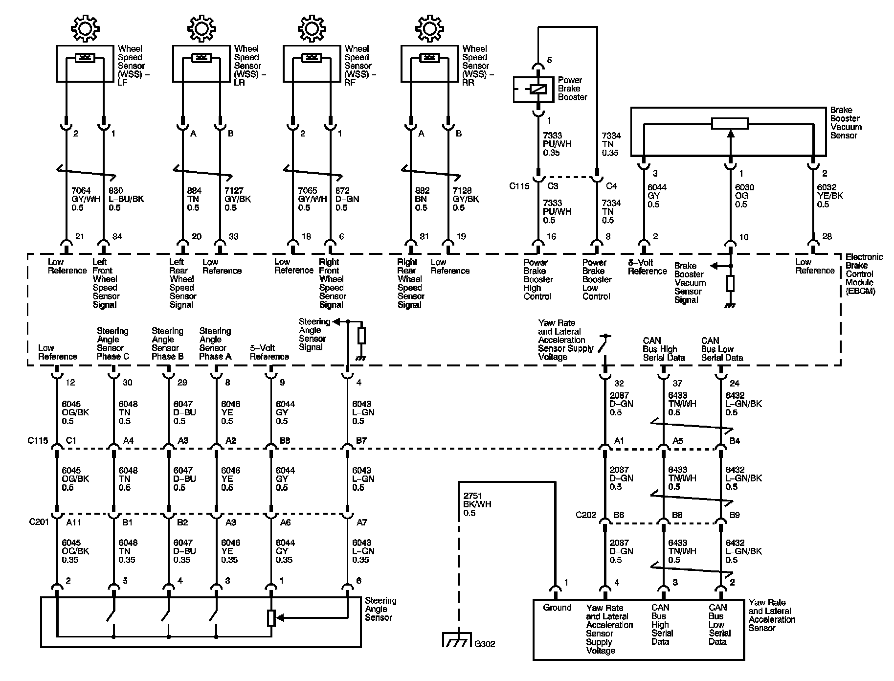
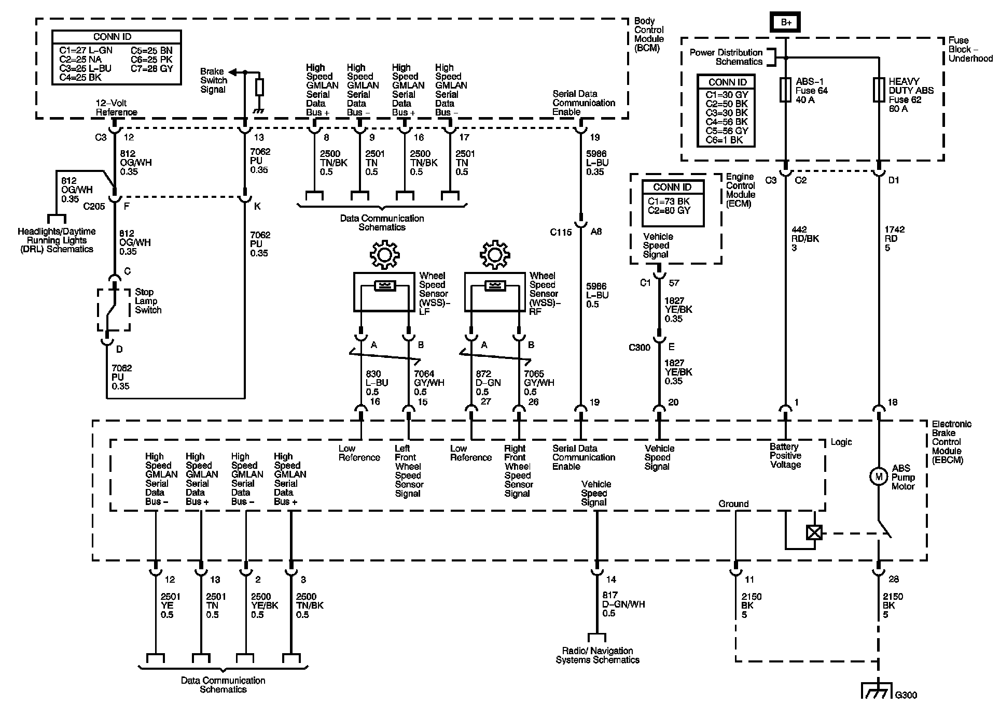

Antilock Brake System Schematics
Antilock Brake System Schematics
Antilock Brake System Schematics 1:

Antilock Brake System Schematics 2:

Antilock Brake System Schematics 3:

Locations: The locations for the Connectors, Grounds, Splices, and Grommets shown within these diagrams can be found via their numbers at Vehicle Locations.